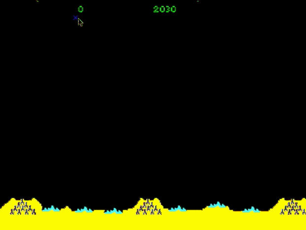
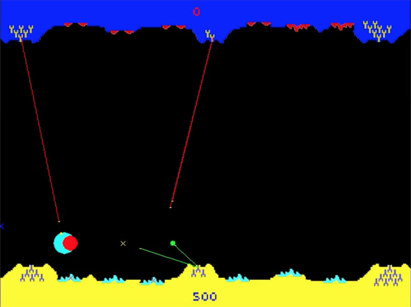
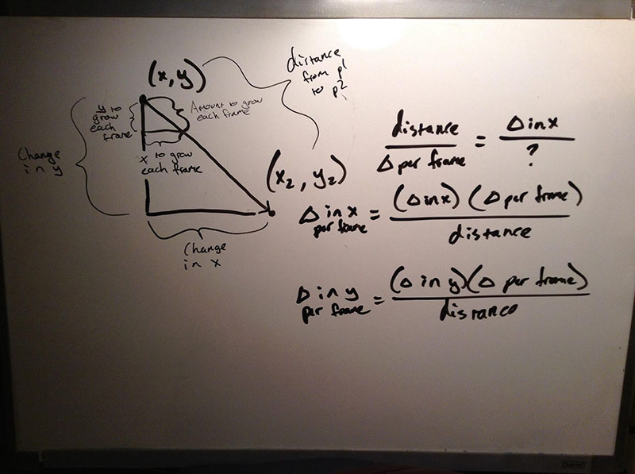

This project was created as a term project for the course 15-112, Fundamentals of Computer Science, taught at Carnegie Mellon by David Kosbie. At the time of completion, my project was one of 30 projects selected from over 440 students, labeled as an outstanding project and presented to the class.
The course this was created for was recently featured on Bloomberg as one of the best computer science courses in the country. Read the article here.
The project is a complete recreation of the original Missile Command game for Atari, from art to gameplay. The term project directions also required we make a unique addition if our project was a remake of an existing game or app, so I implemented a multiplayer feature that allows two players to connect and play using a server. This project was developed in Python using PyGame and Python Sockets for multiplayer support.

The unique challenge for creating this game was designing a simple and fair multiplayer gameplay that would also fit the classic style of the game. It had to be believable, as if multiplayer support has always been in Missile Command since the first release. My design in the end involved a mirror of the original landscape, but with colors changed. Perhaps it is an orbital ship shooting at the ground below. In essence, it is an extension of the original game, as if you see where the source of the missiles are coming from. One player controls the ground while the other player controls the "sky" side.
Each player's screen is rendered locally and the only server-side communication is the coordinates of the mouse clicks for each player. To help make it easier to aim with a mouse, any click within a certain radius of "hotspots" such as cities or missile launchers will automatically be centered on their hitbox. Testing this game with my friend Adam really got intense and it's very fun to play.

My code, in simplest form, runs off of multiple scripts that are imported by the main python script. The structure is as such:
main.py calls single.py (single player), multi.py (multiplayer) and objects.py (see below)
multi.py calls connection.py, which connects to the server (running server.py on any computer)
objects.py includes all the main objects used in the single or multiplayer modes of the game:
missiles, explosions and ammunition for defense stations
images are called via an image functioned designed to load images only once (to make code efficient) and calls them via a dictionary. THIS CODE WAS OBTAINED FROM http://www.nerdparadise.com/tech/python/pygame/basics/part2/
The rest of the program files are written and designed by me with no other help from online, except for multiplayer missile paths. The algorithms for the paths for missiles in single player were simply adapting simple mathematical equations for linear lines, however this proved to be an issue for multiplayer, where some lines acted weirdly, so I had my friend help in the designing of a modified linear path function.
Originally the game was meant to be played with .png files, but Terminal wouldn’t run anything but bitmap, so I have included bitmaps and png files for those who wish to use either. Simply change .bmp to .png in all the scripts (located at top).
Single player, multiplayer and main scripts all have their own pygame main loops (known as main_loop()), each with update() and event-checking functions. Multiplayer has a specific update event that listens for any input from a server (where the other side would have made a new missile) and sends missile coordinates whenever the client computer makes a new move.
The number, location, and state (length, size, visibility) of missiles, cities, explosions, and ammo is all kept track of by different lists. City and city image lists keep track of if its destroyed or not (a boolean), and its location to be drawn at. It also keeps track of its center, for missile-tracking purposes. Missiles and explosions lists keep track of location of start/end points, current points and size (for explosion), and explosions objects monitor if a collision has occurred between the current point of a missile and an explosion. As for the ammunition, a simple list is used to keep track of its center point (tip of the “mountain”) and how many missiles are still available, and an ammo object instant. The ammo object removes ammo and redraws the missiles under each mountain, using code to create a pyramid effect. Max 10 ammo per mountain.
Creating missiles is done by clicking, and its start point for a user is determined by the closes available launch zone (simple x-coordinate distance monitoring). In single player, enemy missiles are randomly generated along the x-axis at y=0, and choose an available target (any remaining city or launch zone). Along its path, it may split and scatter more missiles based on a random int of value between 0 and 75.
In multiplayer, to help “aim” a mouse to targets, I have essentially created a “magnetic click” that guesses which target is the closest to what the user wants and revises the click’s x/y coordinates to match the center of the target. This only works if you’re close to it at the y-axis, which then allows you to click anywhere in the center of the map.
Connecting online uses a server (that sadly needs to be restarted every round) and two client computers. The host uses “localhost” and the connection side uses an inputted IP address and given port (8888) to connect to. Using exceptions, my code waits until the server is active and both sides have been connected with a simple back-and-forth communication between the two. When a multiplayer round is over, all connections are disabled. To allow the connection to remain fast and lightweight, i only used coordinates of the end points of each new missile, and each client side recalculates the line start and keeps track of all missiles individually but in a synchronized fashion. Spam-clicking sometimes leads to miscommunication.
As a last note, many of asked me how i created the psychedelic seizure-inducing colors in an explosion and (if you look carefully) the endpoints of each missile target (the x ). This is simply done by running an constantly changing index variable through a list of colors that loops back to the beginning. The index changes at 25fps, which is what this game runs at.